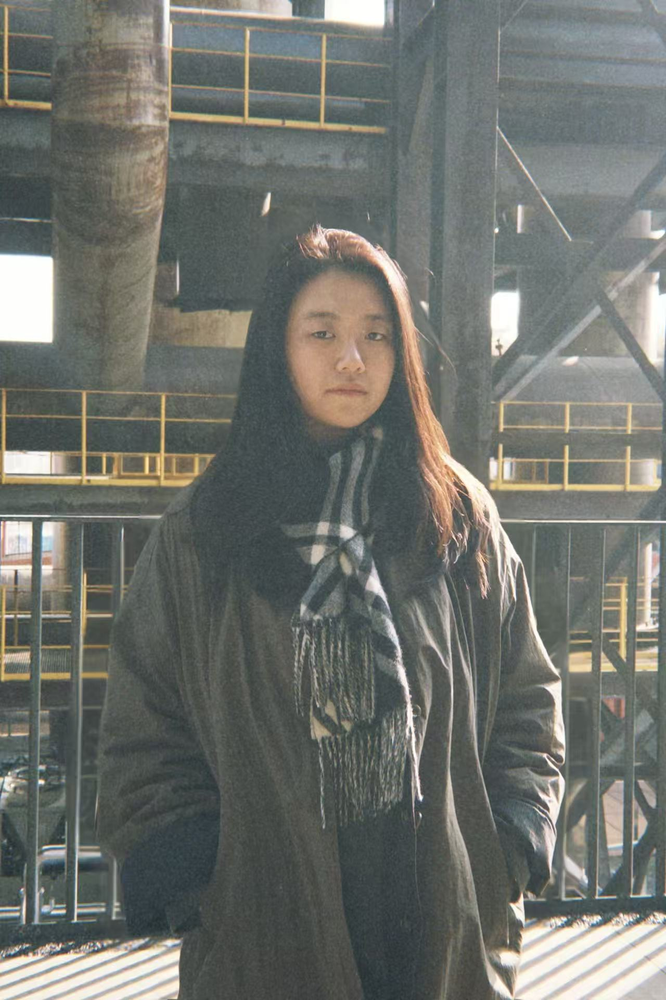

理解需求
梳理品牌目标、活动主题与使用场景，明确空间需要传达的核心信息。
BRIEF · RESEARCH让每一个项目，成为一段独特的空间叙事。
SCROLL TO EXPLORE ↘从商业活动、品牌空间到 AI 辅助设计
每一次探索，都是对空间表达的重新思考。
不止呈现结果，也关注设计如何一步步落地。
梳理品牌目标、活动主题与使用场景，明确空间需要传达的核心信息。
BRIEF · RESEARCH从动线、比例与视觉焦点出发，推演空间结构和整体画面关系。
CONCEPT · SPATIAL DESIGN通过材质、色彩和灯光层次建立氛围，让设计表达更具体、更可信。
MATERIAL · LIGHTING持续优化模型与渲染表现，兼顾视觉效果、制作逻辑与现场可执行性。
3D · RENDER · DELIVERY让想法有形，让空间有感。

HELLO, I’M XINYI :)我是黄欣怡，数字媒体艺术设计专业背景，关注三维空间建模、舞美视觉设计与 AI 辅助设计。参与商业活动及品牌项目视觉设计，将空间结构、材质与灯光整合为完整的视觉体验。工作中，我喜欢把抽象的创意拆解成清晰的空间逻辑，并通过模型、材质和灯光不断验证，让最终呈现既有氛围，也尽可能具备落地性。